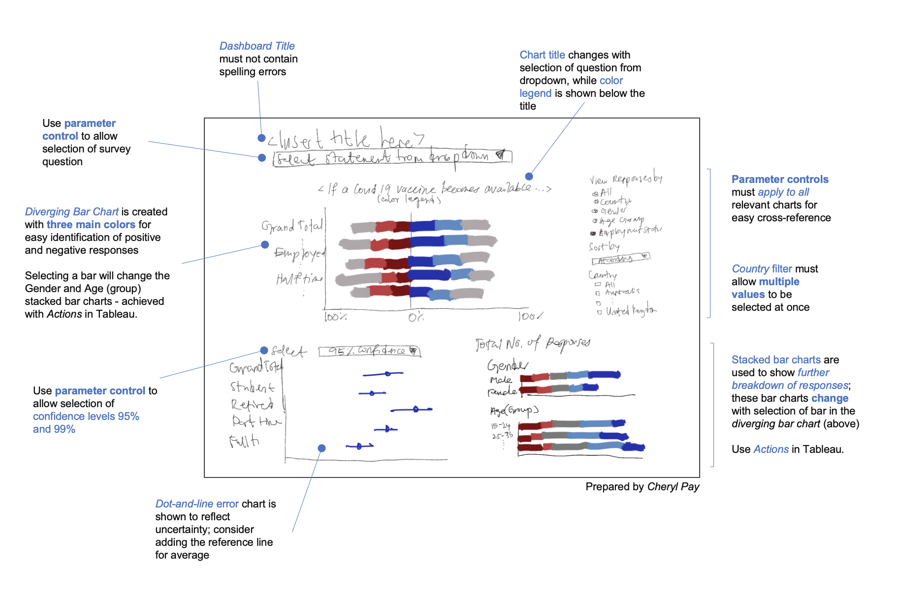

A. Critic
A critic of the following data visualization is provided in terms of clarity and aesthetics.

Clarity
| S/N | Critique | Suggestion |
|---|---|---|
| 1 | The title of the 100% stacked bar chart, Which country is more pro-vacinne? does not provide any insights as to how the responses were collected. | Show in the visualization the survey question that respondents answered i.e. If a Covid-19 vaccine were made available to me this week, I would definitely get it. |
| 2 | The y-axis on both charts do not follow the same sorting i.e. the stacked bar chart is sorted by alphabetical order on the y-axis while the bar chart on the right is sorted by descending percentage on the x-axis. Some readers may overlook this and assume that the bars in the same row belong to the same country in both charts. | Create parameter to allow users to select whether to sort by alphabetical or proportion agree, in ascending or descending orders. Ensure that this parameter is applied to all relevant charts for easy cross-reference. |
| 3 | Demographics data such as age and gender are not reflected in the charts; these demographics data are important to provide further insights into the willingness of the public on Covid-19 vaccination (as trends may surface based on these factors). | Create parameter to allow users to select their category of choice (country, age, gender etc) to view the responses accordingly. Ensure that this parameter is applied to all relevant charts for easy cross-reference. |
| 4 | The visualization provided does not state how the data is collected i.e. respondents answered one question of a public survey. Furthermore, Vac 1 in the legend on the right does not indicate what the question is. | Insert a title “Public Survey on Covid-19 Vaccination”. Insert more questions and their responses; create parameter to allow users to select the question they want to view the responses for. |
| 5 | Confidence levels in the survey responses are not reflected in the visualization. Confidence levels are important to show how representative is the survey of the general population. | Show error bars with a selector on confidence levels, 95% and 99%. |
Aesthetics
| S/N | Critique | Suggestion |
|---|---|---|
| 6 | Vaccine is incorrectly spelled as “Vacinne” in the title for the 100% stacked bar chart. | Use the correct spelling. |
| 7 | In the 100% stacked bar chart, five different colors is used to represent each response, making comparing distribution of responses difficult for the reader. | Instead, responses should be color-coded to three main sentiments - agree, neutral and disagree, and further differentiated by shades of the same color within the same sentiments. |
| 8 | While the stacked bar chart retains the part-to-whole nature of the data, it does not efficiently show the split between positive and negative responses. | Use diverging bar chart to allow readers to see the general shapes of agree and disagree. Complemented with three main colors, it is easy to see whether the sum of agree is greater than the sum of disagree for each question. |
| 9 | The x-axis of both charts have different end points and their major tick marks have different decimal places. | Format both charts to have the same start and end points, and the number formats with the same decimal places. |
B. Proposed Sketch

C. Proposed Dashboard
Available here on Tableau Public.

D. Step by Step Guide
Download and prepare data file in .csv format
Go to https://github.com/YouGov-Data/covid-19-tracker and download the zip file.

Once the .zip file is downloaded, extract the files and go to the data folder.
In Microsoft Excel, create a new workbook, insert the following column headers to each column, save as data-merge.csv.
Column Column Header A Country B RecordNo C endtime D age E gender F employment_status G vac_1 H vac2_1 I vac2_2 J vac2_3 K vac2_6 L vac_3 Go to the data folder, open australia.csv. (If it is in a .zip file, then extract the zip file. You will see the .csv file after the extraction.)
Select Row 1, go to vac_3 and filter for responses that is not blank.

Go to vac_1, vac2_1, vac2_3, vac2_6 and uncheck any blanks.

Copy and paste the records from the 12 columns from australia.csv to data-merge.csv. Do not copy the header.

For some countries, employment_status is not one column. Instead, you will see 7 columns related to employment_status. To arrive at the corresponding employment_status, first create a new column named employment_status then conduct a vlookup.
Create a new column named employment_status.

Create a new tab called key and insert the key table into cells A1 to B8, as shown below.

Next, go back to the newly created employment_status column, and insert the vlookup formula.

The formula in Cell CG1 for employment_status is

Drag and fill the formula down to all records.
Continue with Step 5 above.
Repeat steps 4 - 5 for the .csv files for all other countries. Once you have completed the above for all countries, save your data-merge.csv file to a local folder. Your final data-merge.csv should have 40,083 records.
Importing and Preparing the data in Tableau
Open Tableau. Drag and drop your data-merge.csv file to Tableau.

Go to Sheet1 at the bottom of your screen.
From the Data pane, drag Endtime to Filters. In the pop up, select Years and click Next.

Since we only want to include responses from 1 Jan 2021 onwards, we check 2021 and uncheck the other values. Click OK.
To ensure that this filter applies to all the worksheets that we create on Tableau, right click on Endtime in the filters pane, go to Apply to Worksheets > AllUsingRelatedDataSources.

In the Data pane, right click on Age. Go to Create > Group.

Select 18 to 33 and group them together. Name the group “18 to 33 years”.

For the remaining ages, group them into 3 other age groups as shown below. There are 4 age groups in total.

Creating the divergent bar chart
To create a new parameter or new calculated field, right click and select CreateParameter or CreateCalculatedField from the Data pane.
| Create new parameter | Create new calculated field |
|---|---|
 |
 |
Create a new parameter: and its corresponding calculated field.
This parameter will be used to select the question (out of six questions) to show responses for in the dashboard.
Parameter Calculated Field Set [Parameter] Name as Question Parameter
Set Data Type as String.
Set Allowable Values as List and add the ListofValues per screenshot below.
 Value and Display As are listed as follows.
Value and Display As are listed as follows.Vac1, display as If a Covid-19 vaccine were made available to me this week, I would definitely get it.
Vac3, display as If a Covid-19 vaccine becomes available to me a year from now, I definitely intend to get it.
Vac2 1, display as I am worried about getting Covid-19.
Vac2 2, display as I am worried about potential side effects of a Covid-19 vaccine.
Vac2 3, display as I believe government health authorities in my country will provide me with an effective COVID19 vaccine.
Vac2 6, display as If I do not get a COVID19 vaccine when it is available, I will regret it
Set [Calculated Field] Name as Question.
Add the following formula. Click Apply, then click OK.

Create the following calculated fields.
Name Formula Number of Response 1 Score int(left([Question],1))
Convert field to Dimension by right clicking on Score in the data pane > Select ConverttoDimension.

Total Number of Response { EXCLUDE [Country] : sum(([Number of Response])) }Count Agree If [Score] <= 2 then 1elseif [Score]=3 then 0.5else 0endCount Disagree If [Score] <= 2 then 0elseif [Score]=3 then 0.5else 1endPercentage Agree sum([Count Agree]) /sum({ EXCLUDE [Score] : sum([Number of Response])})Percentage Disagree sum([Count Disagree]) /sum({ EXCLUDE [Score] : sum([Number of Response])})Prop Agree sum(iif([Score] < 3, 1,0))/SUM([Number of Response])There are eight calculated fields created.

Right click on Score, select Aliases and add alias for all values from 1 to 5.
1 - Strongly Agree
2 - Somewhat Agree
3 - Neutral
4 - Somewhat disagree
5 - Strongly disagree

Create the following parameters and their calculated field to be used for toggling responses in the dashboard
Parameter Calculated Field Set [Parameter] Name as Question Parameter
Set Data Type as String.
Set Allowable Values as List and add the ListofValues per screenshot below.
Value and Display As are listed as follows.Vac1, display as If a Covid-19 vaccine were made available to me this week, I would definitely get it.
Vac3, display as If a Covid-19 vaccine becomes available to me a year from now, I definitely intend to get it.
Vac2 1, display as I am worried about getting Covid-19.
Vac2 2, display as I am worried about potential side effects of a Covid-19 vaccine.
Vac2 3, display as I believe government health authorities in my country will provide me with an effective COVID19 vaccine.
Vac2 6, display as If I do not get a COVID19 vaccine when it is available, I will regret it
Set [Calculated Field] Name as Question.
Add the following formula. Click Apply, then click OK.
Set [Parameter] Name as View responses by.
Set Data Type as Integer.
Set Allowable Values as List and add the ListofValues per screenshot below. Note the DisplayAs column.

Set [Calculated Field] Name as View by.
Add the following formula. Click Apply, then click OK.

Set [Parameter] Name as Sort by.
Set Data Type as Integer.
Set Allowable Values as List and add the ListofValues per screenshot below. Note the DisplayAs column.

Set [Calculated Field] Name as Sort visualization by.
Add the following formula. Click Apply, then click OK.

Once you have created all the parameters above, right click on Question Parameter in the Data: Parameters pane and select ShowParameter. Then, do the same for View response by and Sort by. The three parameters should appear on the right hand side of your window.

For the parameter View response by that is shown,click on the down arrowhead to the right of “View response by” and select SingleValueList from the dropdown.

Rename the worksheet from Sheet1 to Likert.

From the Data pane, drag View By to Rows, drag Percentage Disagree to Columns, then drag Percentage Agree to Columns.

AGG(Percentage Agree) must be to the right of AGG(Percentage Disagree).
Click on All below the Marks pane. From the Data pane, drag Score and drop onto Color. The color legend will appear on the right of your window.

On the color legend, click on the down arrowhead to the right of “Score” and select EditColors from the dropdown. Select Tableau Classic 20 as the Color Palette and update each color according to the screenshot below. Click Apply, then click OK.

On the color legend, click and drag Neutral to the top of the list. Next, drag Strongly agree to third on the list.

Right click on the x-axis for Percentage Disagree. Set Range to Fixed, Fixed start to 0, and Fixed end to 1. For Scale, tick Reversed. For Axis Titles, remove Percentage Disagree from the Title. The title is left blank.

Go to Tick Marks. Set Major Tick Marks to Fixed and update Tick Interval to 0.2.

Right click on the x-axis for Percentage Agree. Set Range to Fixed, Fixed start to 0, and Fixed end to 1. For Axis Titles, remove Percentage Disagree from the Title. The title is left blank.
Then, go to Tick Marks. Set Major Tick Marks to Fixed and update Tick Interval to 0.2.
Right click on the x-axis for Percentage Agree, select Format. Under Scale > Numbers, choose Percentage and set decimal places to 0. Do the same for the x-axis for Percentage Disagree.

On the taskbar at the top, go to Analysis > Totals, select Show Column Grand Totals and Column Totals to Top. Ensure that there is a tickmark in the front.

Right click on the y-axis, select Format. For Alignment, select Center for both Horizontal and Vertical.

Double click on the Chart Title: Likert. Remove <SheetName>. Click on Insert at the top right, and select Parameters.QuestionParameter. This allows the title to change dynamically when the reader selects the survey question they wish to view the responses for.

Then, copy and paste the following text to the Edit Title window.
Strongly disagree | Somewhat disagree | Neutral | Somewhat agree | Strongly agree
Update the alignment to Center and font (type, size and color) according to the screenshot below.

On the taskbar at the top, go to Worksheet. Uncheck Show Sort Controls.

Click on All below the Marks pane. From the Data pane, drag Number of Response and drop onto Tooltip.

From Rows, right click on View by and click Sort.

Sort by Field, and select Field Name as Sort visualization by (the calculated field for [parameter] Sort by).

From the Data pane, drag Country to Filters pane. In the Filter[Country] window, click All to select all countries. Then click OK.

In the Filters pane, click on the down arrowhead next to Country. Click ShowFilter.

Then, go to the right of your window. Click on the down arrowhead of the Country filter card. Go to ApplytoWorksheets > Tick UsingRelatedDataSources. Since we are working with one data source only, by ticking UsingRelatedDataSources, we ensure that the country filter is applied to all charts on the dashboard (for consistency purposes).
Also ensure that MultipleValues(list) is selected. This allows the users to view the statistics of a few countries at one glance.

The diverging bar chart is now ready with parameter controls on the right to allow the reader to select.

Creating dot-and-line chart for confidence levels
On the taskbar at the top, go to Worksheet > New Worksheet.
Rename the worksheet by double clicking on the sheet on the bottom of your window. Rename to Uncertainty.

Create a new parameter named Confidence Level.
Parameter Calculated Field Set [Parameter] Name as Confidence Level.
Set Data Type as String.
Set Allowable Values as List and add the ListofValues per screenshot below.

Set [Calculated Field] Name as CI Selected.
Add the following formula. Click Apply, then click OK.

In the Data: Parameters pane, right click on Confidence Level, select ShowParameter.

On the taskbar at the top, go to Analysis > CreateCalculatedField. Create the following calculated fields.

Name Formula CI_Lower Limit 95% 
CI_Upper Limit 95% 
CI_Lower Limit 99% 
CI_Upper Limit 99% 
From the Data pane, drag Row by to Rows, drag Prop Agree to Columns. In the Marks pane, change Automatic to Circle.

From the Data pane, drag Measure Values to Columns. In the Measure Values pane, remove all fields except the following four fields.
AGG(CI_Lower Limit 95%)
AGG(CI_Upper Limit 95%)
AGG(CI_Lower Limit 99%)
AGG(CI_Upper Limit 99%)

Right click on the x-axis for Value, and select DualAxis.
Right click on the x-axis on the top, and select SynchronizeAxis.

In the Marks:Measures Values pane, change the chart from Circle to Line.

From the Data pane, drag Measure Names to Path (under the Marks: Measure Values pane).

Click Color in the Marks:Measure Values pane and select blue (in the screenshot below).

Click Size in the Marks:Measure Values pane and adjust the size to the screenshot below.

Right click on the y-axis, select Format. For Alignment, select Center for both Horizontal and Vertical.

Right click on the x-axis on the top > Uncheck Show Header.

On the taskbar at the top, go to Analysis > Totals, select Show Column Grand Totals and Column Totals to Top. Ensure that there is a tickmark in front of both fields.

Right click on the x-axis. Set Range to Fixed, Fixed start to 0, and Fixed end to 1. For Axis Titles, remove Prop Agree from the Title. The title is left blank.

Next, go to Tick Marks. Set Major Tick Marks to Fixed, with Tick Interval as 0.1.

Double click on the title. Copy and paste the following to the Edit Title window.
Proportion of respondents that somewhat/strongly agree to the statement above.

Right click on the x-axis, select Format. Under Scale > Numbers, choose Percentage and set decimal places to 0.

Right click on the x-axis > AddReferenceLine for average value.

From the Marks:AGG(Prop Agree) pane, click on Tooltip. In the Edit Tooltip window, update to include the Parameter Question.

Create worksheets for Age and Gender
Create new worksheet. Rename the sheet to Gender.
From the Data pane, drag Number of Response to Columns, Gender to Row. Then, drag Score to Color in the Marks pane.

Right click on the Title: Gender, select HideTitle.

On the color legend, click on the down arrowhead to the right of “Score” and select EditColors from the dropdown. Select Tableau Classic 20 as the Color Palette and update each color according to the screenshot below. Click Apply, then click OK.
Double click on the x-axis. Remove the Title from Axis Titles.

Go to Tick Marks. Set Major Tick Marks to Fixed and update Tick Interval to 0.1.

Right click on the x-axis, select Format. Under Scale > Numbers, choose Percentage and set decimal places to 0.
In Columns, click on the down arrowhead of SUM(Number of Response). Go to QuickTableCalculation and select PercentofTotal.

From the Data pane, drag Number of Response to Tooltip. Then, again from the Data pane, drag Number of Response to Label.

In the Marks pane, click on the down arrowhead on SUM(Number of Response) - with the tooltip icon. Go to QuickTableCalculation and select PercentofTotal.

From the Marks pane, click on Label. Go to Font, click the dropdown arrow. Set font to Tableau Book, Size 8 and color white.

Right click on the worksheet Gender at the bottom bar. Select Duplicate.

From Rows, right click on Gender and click Sort.

Sort by Field, and select Field Name as Sort visualization by (the calculated field for [parameter] Sort by).

Rename the worksheet to Age.
Drag Age (group) to Rows and remove Gender from Rows.

Creating the dashboard
On the taskbar at the top, go to Dashboard > New Dashboard.

From the bottom bar, right click on the Dashboard tab and select Rename. Rename to the following.
Public Survey on Covid-19 Vaccination

On the taskbar at the top, go to Dashboard. Tick Show Title.

From the Size pane on the left, set to Custom size, Fixed Size, Custom, Width = 1150 px and Height = 800 px. Custom size is selected so that the dashboard layout is not compromised when viewing on computers with different sizes.

From Sheets, drag and drop Likert to the top-center of the dashboard. A shaded grey rectangle that covers the top-half of the dashboard (below the title) should appear before you release your cursor.

Remove color legend from the dashboard.

Add the other sheets: Uncertainty, Gender and Age to the dashboard and align the parameter controls and filters according to the screenshot below.
Question Parameter is below the dashboard title and above the diverging bar chart.
On the right most column of the dashboard is firstly View response by, followed by Sort by, and then Country.

Select the tile belonging to the diverging bar chart, change view from Standard to Fit Height. Do the same for the tile belonging to the confidence levels.

Drag Text from the Objects pane, on top of the Gender stacked bar chart (see above). In the EditText window, enter the following.
Total Number of Response
Select a bar above to watch the distribution below change.

Drag Text from the Objects pane to the right most column of the dashboard, below the Country filter. In the EditText window, enter the following.
Data Source
Imperial College London YouGov Covid 19 Behaviour Tracker Data Hub

Add white spaces to the dashboard using the Blank from the Objects pane. The white spaces compartmentalizes the space and increase neatness.

Right click on the y-axis of the diverging bar chart and the dot and line charts. Select HideFieldLabelsforRows.

Double-click on “Question Parameter”. In the EditTitle window, type the following.
Select statement from dropdown

On the taskbar at the top, go to Dashboard > Actions.

In the Actions dialogue box, click Add Action > Filter.
{width="45%"}In the Edit Filter Action dialogue box, set Name: Distribution of Gender and Age (group).
Source Sheets: Tick Likert only, and Run action on: Select.
Target Sheets: Tick Age, Gender and Likert only. Clearing the selection will Show all values.

The above action will result in the Gender and Age(group) stacked bar charts to change accordingly when a selection is made in the diverging bar chart.
The dashboard is now completed (available here on Tableau Public).

E. Main Observations
Vaccine confidence today is higher in the older age groups, with more than half of the respondents aged 50 and above keen to take the vaccine if it were made available to them this week. At 95% confidence level, 71% of respondents aged 66 years and above will take the vaccine today, compared to the only 43% in those aged 18 to 33 years.
If a Covid-19 vaccine were made available to me this week, I would definitely get it.

The proportion of respondents that are worried about getting Covid-19 do not vary much across gender, age or employment status. However, varying levels of concern are apparent when comparing responses by country. Japan, Spain and South Korea are the top three countries with more than 50% of respondents in these countries worrying about getting Covid-19.
I am worried about getting Covid-19.


Despite Japan ranking the highest for worrying about getting Covid-19, Japanese respondents are unwilling to take the vaccine should it be available to them this week.

Japan also has the highest proportion of respondents that are worried about the side effects of the vaccine.

With regards to confidence in the government, Denmark and United Kingdom are leading at 73% and 69% of total respondents respectively that agree with the statement below.
I believe government health authorities in my country will provide me with an effective Covid-19 vaccine.

Unsurprisingly, the same countries that were most worried about getting Covid-19 also have less belief in their government health authorities to provide an effective Covid-19 vaccine, namely South Korea and Japan.
Despite Singapore having greater confidence in their government health authorities than other countries, respondents from Singapore are less likely than other countries to take the vaccine should it be available to them this week.
If a Covid-19 vaccine were made available to me this week, I would definitely get it.

Overall, people are more confident of taking the vaccine a year from now instead. The proportion of respondents that somewhat/strongly agree to taking the Covid-19 vaccine is 7 percentage points higher when deciding between taking a vaccine this week or taking a vaccine one year later.
I will take the vaccine this week… I will take the vaccine a year from now…